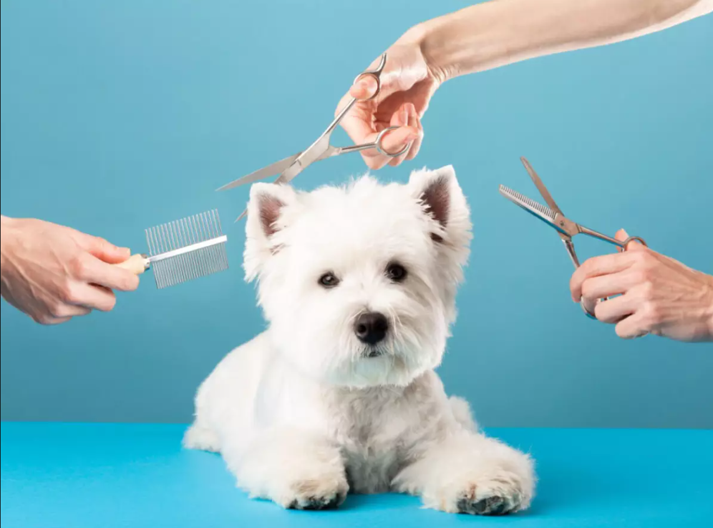
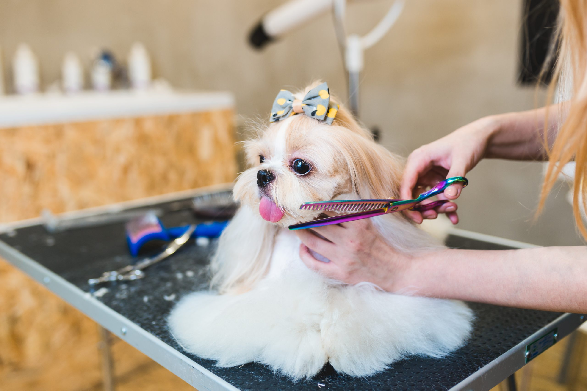
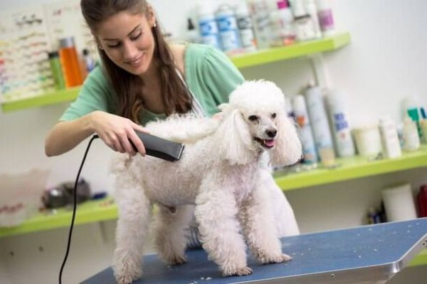
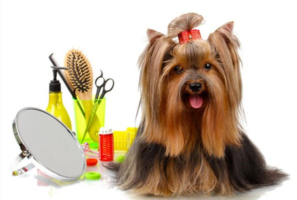
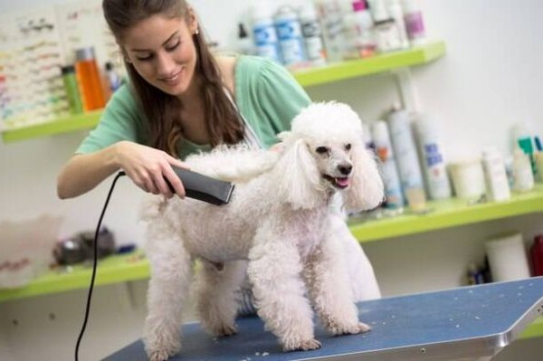
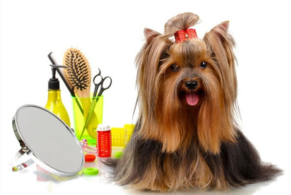

Nossa tosa
A Tosa no Petshop da Belinha é um serviço onde a estética encontra a saúde. Mais do que um corte de pelos, é um trabalho artesanal realizado por tosadores experientes que entendem as necessidades específicas de cada raça e tipo de pelo. Oferecemos desde a Tosa da Raça (seguindo o padrão ideal do seu pet) até a Tosa Higiênica e cortes personalizados conforme o seu desejo. Nossos profissionais utilizam tesouras e máquinas de alta precisão, sempre esterilizadas e afiadas, para garantir um corte limpo, bonito e sem dor. Nosso foco é o conforto e a segurança do animal durante todo o processo, utilizando técnicas de manejo gentil para que a experiência seja tranquila. Seja para um visual de exposição ou para o alívio do calor, a Tosa da Belinha garante que seu pet sairá não só elegante, mas com o máximo de bem-estar.
Tosas regulares
A Tosa regular é um cuidado essencial que tem um papel crucial na saúde e qualidade de vida do seu pet. Um dos principais benefícios é o controle da temperatura corporal, especialmente no clima mais quente da nossa região; pelos longos e densos podem causar superaquecimento. Além disso, a tosa ajuda a prevenir nós e emaranhados, que puxam a pele, causam dor e podem esconder problemas dermatológicos ou parasitas. A Tosa Higiênica (focada em áreas como barriga, partes íntimas e patas) é vital para manter a limpeza após as necessidades fisiológicas e evitar o acúmulo de sujeira e bactérias nessas áreas sensíveis. Manter o pelo no comprimento ideal não só facilita a higiene diária em casa, como também promove o conforto do seu pet, permitindo que ele se movimente com mais leveza e alegria.
 


